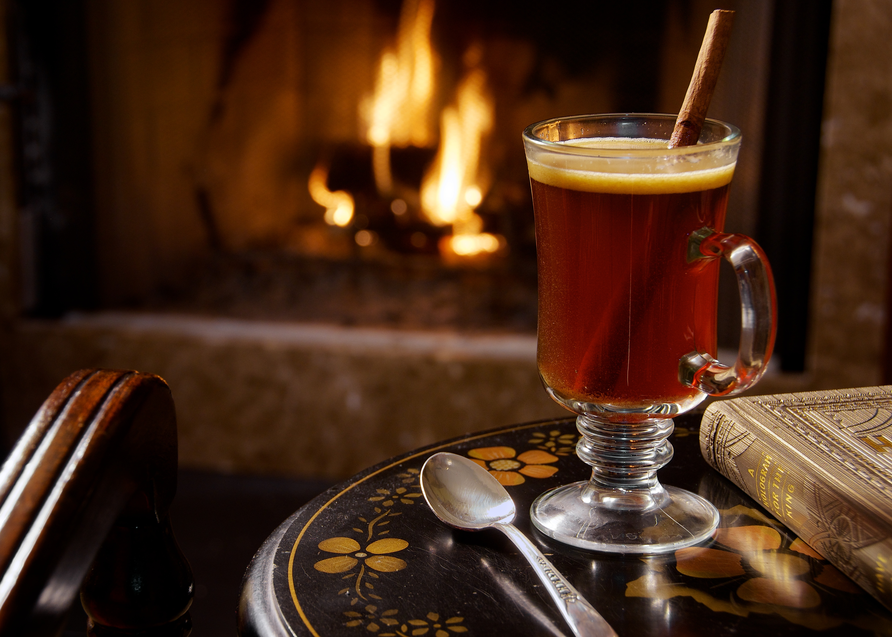
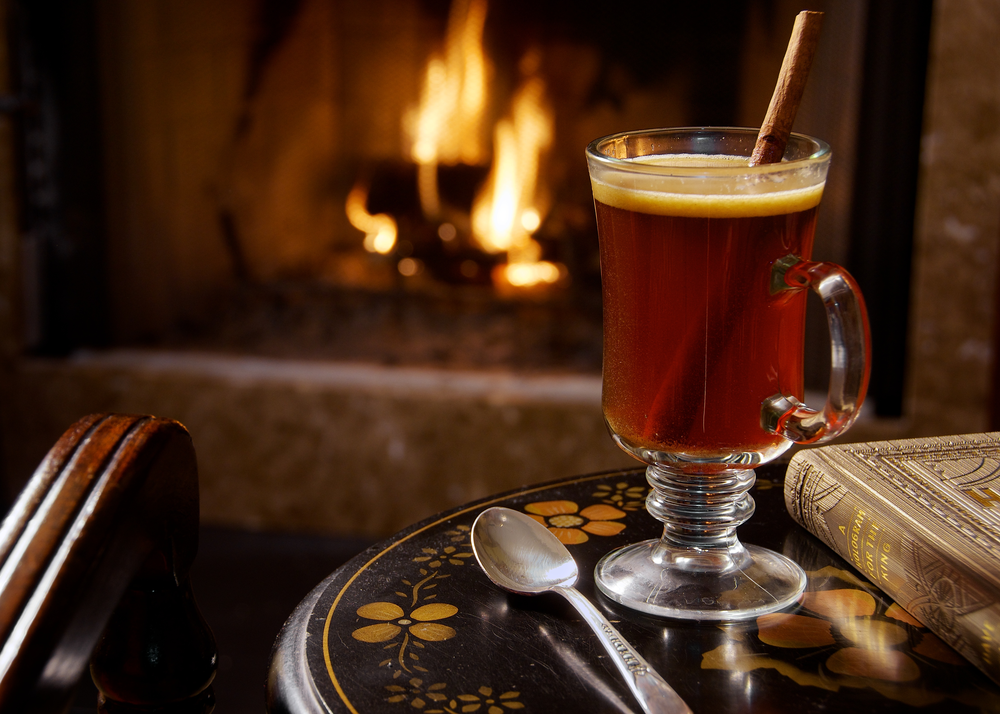
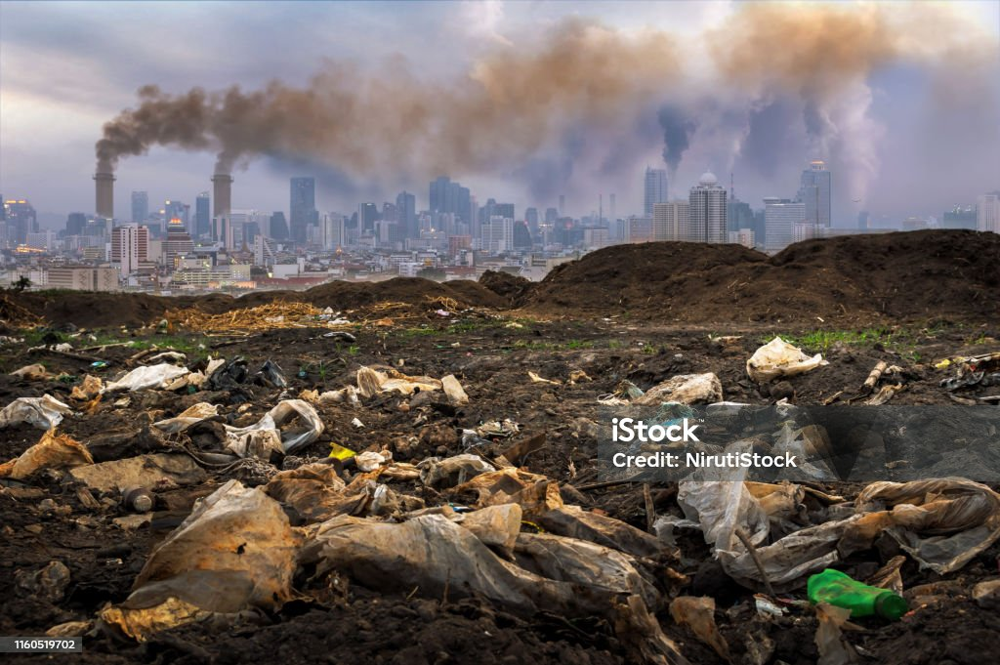
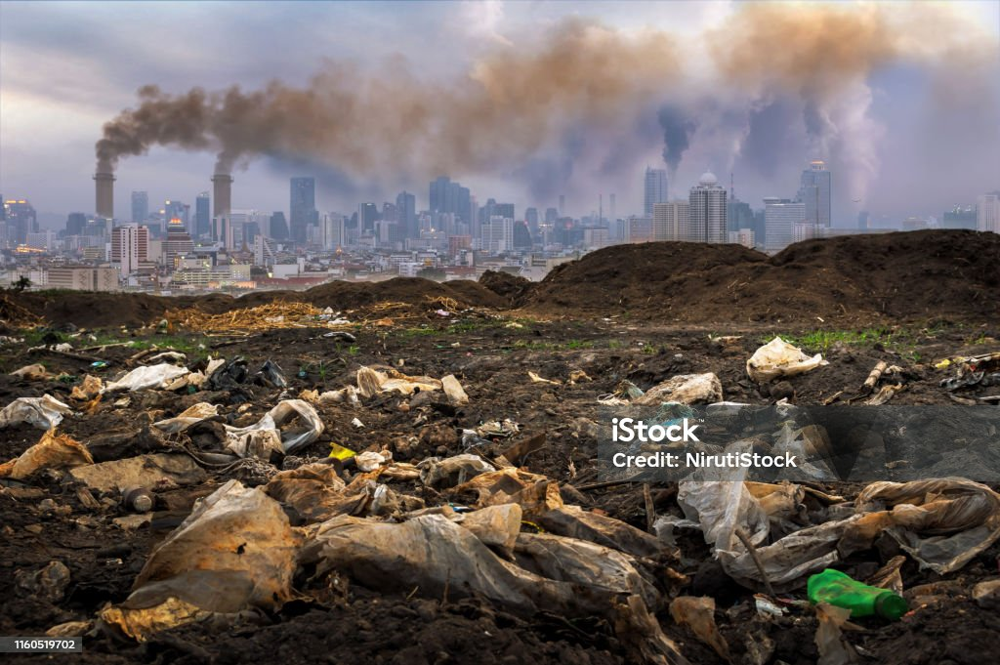
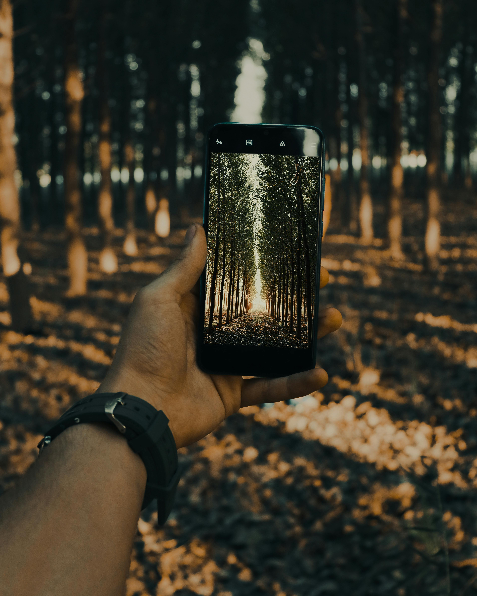
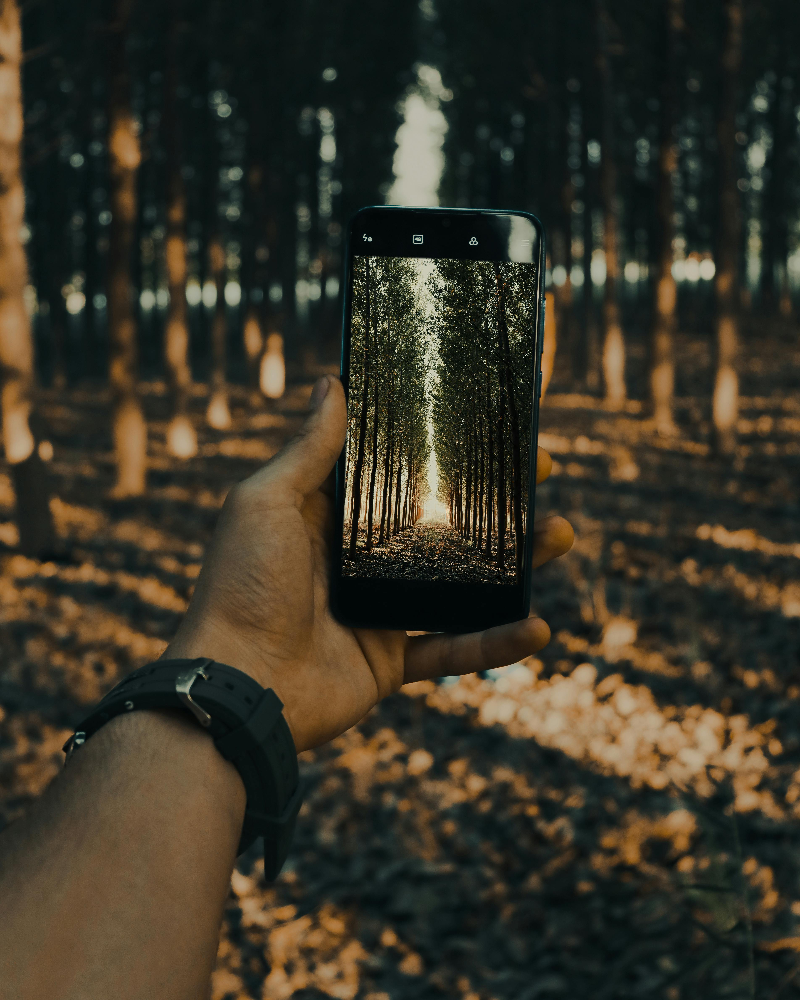

 

 

I chose the following images to create 2 different photomages with the focus of pollution and its bystander syndrome and its affect to our other coexisting neighbors which are animals. in this case they are represented by a turtle since the water areas are greatly affected and we all need water to survive. for the first image with the turtle looking at all the plastic on the water, I firstly placed the turtle image on a file size 5 x7. selected the lasso tool and the switched to the polygon for better agility, selected the area I wanted which is the turtle on the rock looking to its front view, and masked the image. then I selected and dropped the water image on the file, used the polygon lasso tool selecting the water area I wanted and placed it in a zoom in proportion with the turtle and mask it the image. the third image trash, I did the same thing. used the polygon lasso tool, selected the specific area where the trash is, I enlarged the image more and placed the image in an angle on the bottom of the turtle image. I placed the same image on the file and followed the same process enlarging another area of the trash to make it more upward and scaling and masked both of them. i selected an are for the water as well and did the same processes as before, after evrything was in place i went on to use the refine brush on the mask layer so the bottle looked more neat and a litte part on the turtle shell as well. for the bottles after refining them i selected a hard mix blending mode and the put on a text that said WHY? with a marron kind of color, just to question what its happening in our surrounding ecosystem. the text is warped on style fish, 24pt, VA 200, its bend at +34, horizontal distortion -30% and vertical -42%.
For the second photomage i used the images cup, pollution, handphone which is named ignore it, as the photo is representing distraction and againg ignoring the situation around it which is pollution. for this one i did the same as the previous photomage and i used the polygone lasso, selected the are masked and place it where i liked. i seleted the mask layer to use the refine brush just to tweek and make the edges smoother of the fire place of polution and around the cup as well. the size of this image is 5 x 7 as well.
HOME